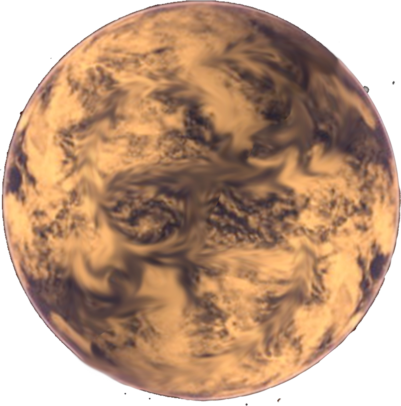

FOLLOW THE JOURNEY
-

Kepler-462b
2.3 LIGHTYEARS
Kepler462b, situated within the Cygnus constellation, is a giant gas formed exoplanet orbiting a type A star – white dwarf, discovered in 2016. To complete a full orbit term it takes average 84.7 days compared to earth which is 365 days, therefore resulting in a shorter year, shorter days and hot, harsh conditions. Due to the temperature, it would make the exoplanet least habitable for human civilisation.
-
Proxima Centauri b
4.246 LIGHTYEARS
In a new study, an international team of researchers found that the minimum possible mass for Proxima b(opens in new tab), which lies just 4.2 light-years from Earth, is just 17% more massive than our planet. Previously, scientists thought that this exoplanet, which lies in the habitable zone of its star, harbored a minimum of about 1.3 Earth masses. The new measurement indicates that Proxima b could be even more like our home planet, at least in size, than previous observations led scientists to think.
Source, SPACE.COM -

Gliese 581cc
23.62 LIGHTYEARS
Gliese 581c is a super-Earth planet that was discovered in 2007. It resides in the Gliese 581 system, which at 20 light-years from Earth is relatively close to our planet (in celestial terms). While early research suggested that Gliese 581c may have liquid water on its surface because it resides in its star's "habitable zone," more recent research suggests it may have a Venus-like environment.
Source, SPACE.COM -

TRAPPIST-1e
39.46 LIGHTYEARS
TRAPPIST-1 e is a terrestrial exoplanet that orbits an M-type star. Its mass is 0.692 Earths, it takes 6.1 days to complete one orbit of its star, and is 0.02925 AU from its star. Its discovery was announced in 2017.
Source, NASA.COM
FURTHER AWAY..
Space beyond the Milky Way is a vast, largely unknown expanse of galaxies and star systems. It is believed that there are hundreds of billions of galaxies in the universe, each with its own unique composition of stars, planets, and other objects. It is possible that there could be other forms of life beyond our own Milky Way, but so far there has been no conclusive evidence of such. It is likely that space beyond the Milky Way is filled with a wide variety of planets, stars, and other objects, many of which we have not yet discovered. As technology advances, we may one day be able to explore these distant galaxies and learn more about what lies beyond our own Milky Way.